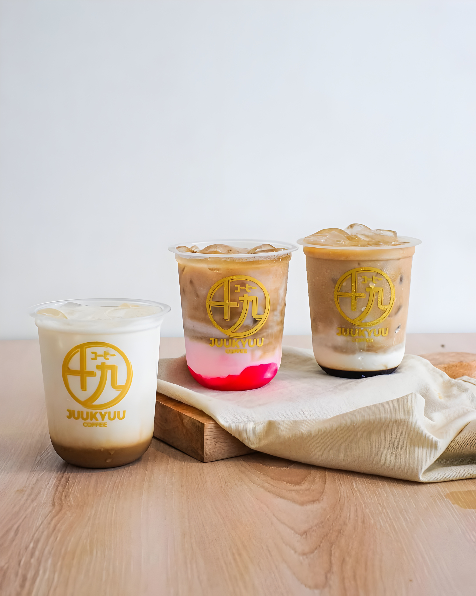
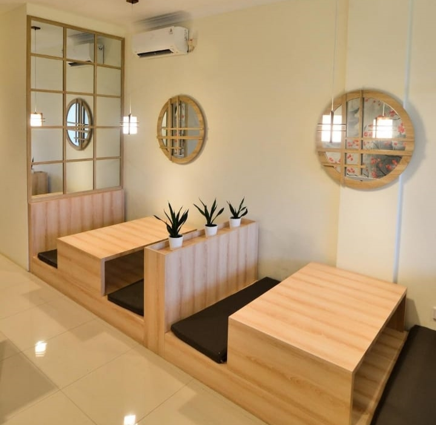

Enjoy carefully crafted coffee, signature creations, and a serene café experience inspired by Japanese aesthetics.

Best Seller
Juu Kyuu Coffee
Current Status
Senin – Jumat: 10:00–22:00, Sabtu – Minggu: 08:00–23:00
Location
Ruko Westfield Jalan Western Boulevard, Jl. Grand Wisata blok ER 5 No.19, Mustikajaya, Kota Bks, Jawa Barat
"Ichi-go Ichi-e" — satu pertemuan, satu kesempatan. Filosofi Jepang ini menjadi jiwa dari Juu Kyuu Coffee. Setiap cangkir yang kami sajikan adalah momen istimewa yang tidak akan terulang sama persis.
Berdiri sejak 2022 di Grand Wisata Bekasi, Juu Kyuu (九十九) menghadirkan perpaduan unik antara kesederhanaan estetika Jepang dan kekayaan biji kopi pilihan Nusantara. Nama "Juu Kyuu" sendiri terinspirasi dari angka 99 — simbol kesempurnaan yang selalu kami kejar dalam setiap racikan.
Dari biji kopi single origin hingga signature drink khas, setiap sajian diracik dengan ketelitian seorang shokunin — pengrajin yang mendedikasikan diri pada kesempurnaan.
3+
Years Brewing
20+
Signature Menus
100%
Premium Beans

"Oishii"
Delicious
九十九
Juu Kyuu • 99
Biji kopi single origin pilihan dari berbagai penjuru Nusantara, di-roast dengan presisi.
Suasana tenang dengan sentuhan minimalis Jepang — tempat sempurna untuk bersantai.
Kreasi eksklusif yang tidak akan kamu temukan di tempat lain — racikan khas Juu Kyuu.
Setiap minuman diracik penuh perhatian oleh barista berpengalaman layaknya seorang shokunin.